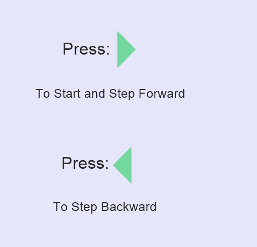

Stack:
A stack is a Linear Data Structure in which an element is inserted or deleted only at one end, called the top of the stack.It is also known as LIFO (last in, first out) Data Structure.Stack is an Abstract Datatype.
It supports two main operations:
push(): Inserts element on top of the stack
pop(): Removes element from top stack

Application of Stack:
Stack is used by compilers to check for balancing of parentheses, brackets
and braces.
Stack is used in Recursion to store pending function calls, intermediate arguments and return values
Stack is used for Reversal of data
Stack is used for Expression Evaluation and Conversion